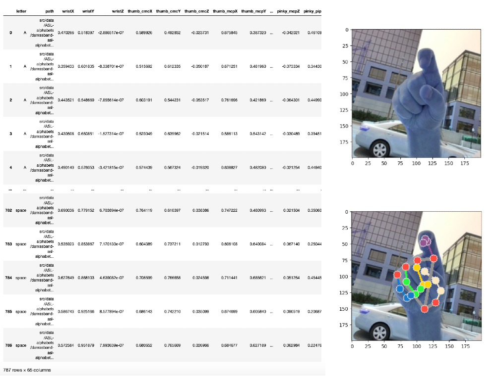
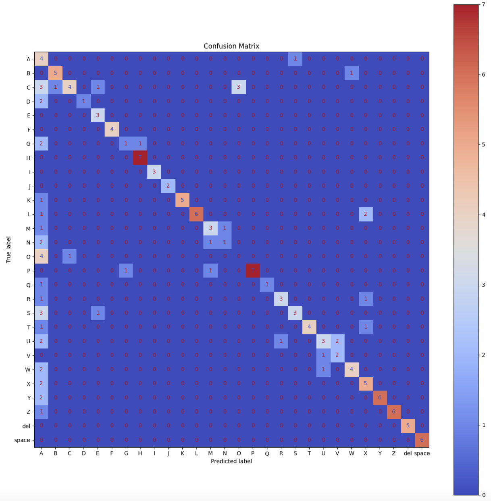
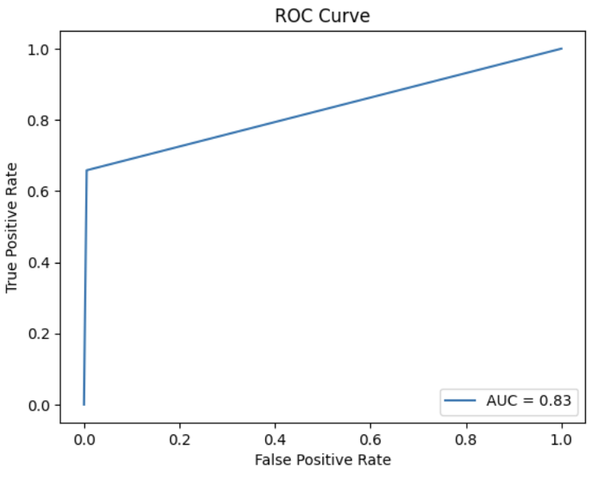
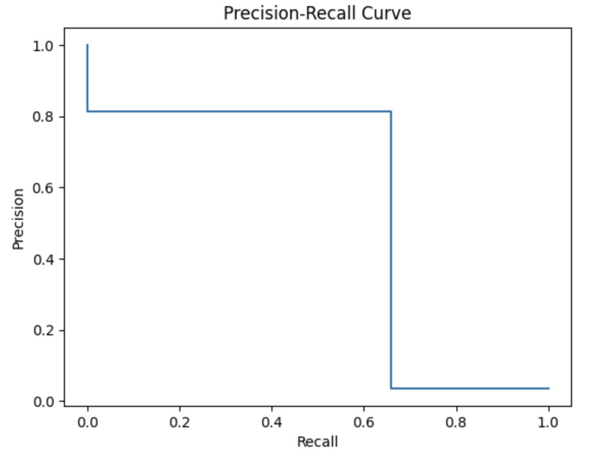
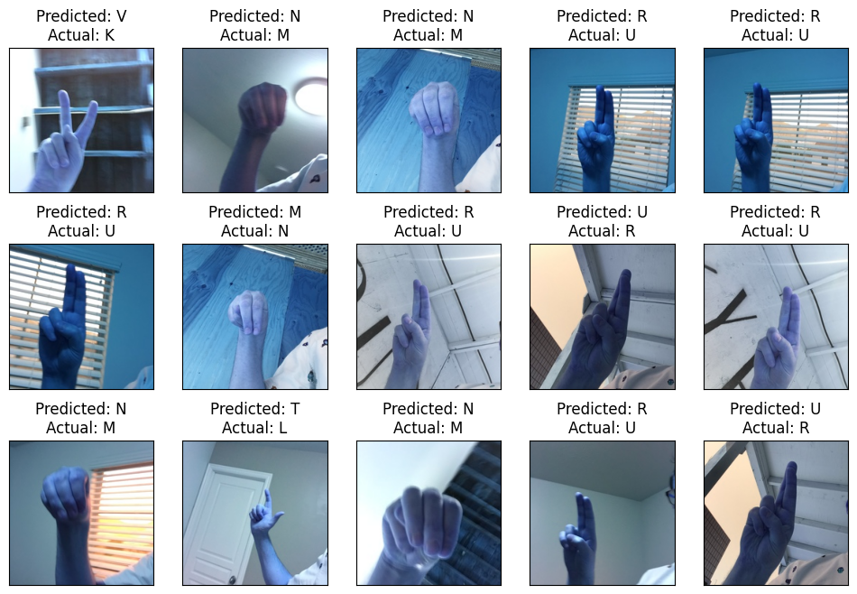
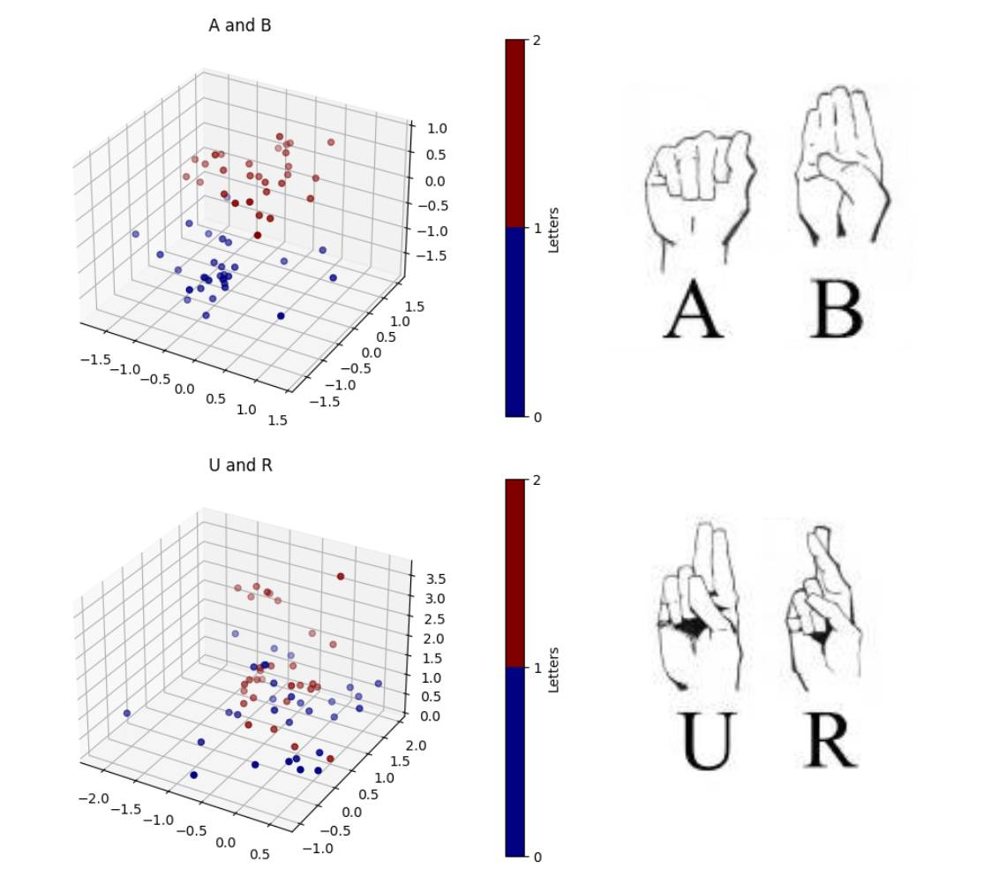

CS 4641- Machine Learning

Using Computer Vision to Translate American Sign Language
Motivation
Over half a million people worldwide use American Sign Language (ASL) to communicate. For these people, being able to communicate quickly and transparently is a luxury, not an everyday occurrence. Training a computer to read ASL could be an accurate and cost-effective way to lower the barrier of communication between hearing and non-hearing people.
How Do We Solve This?
General sign language detection is hard and lacks the enormous quantity of data that most language models require. Therefore, we are focusing on only the 26 Latin letters (with punctuation and digits). This makes our effort simpler, more cost effective, and the techniques we use may one day be expanded upon to build a more general model.
There are two standards of ASL comprehension. The first is individual character comprehension where single images are translated to their corresponding ASL character. Köpüklü et al. demonstrate that similar recognition tasks can be performed with high (>90%) accuracy using convolutional neural networks (CNNs). The second, more general comprehension is translation. When experienced fingerspellers “speak”, they coarticulate their letters, changing the appearance of future letters. This makes translation a sequence-to-sequence problem, where not only individual signs but the greater context and grammar are relevant. Previous approaches like Metaxas et al. used a CRF model to solve the sequence-to-sequence problem. We, however, are going to be using the Transformer architecture, an architecture motivated by language translation, which makes it well-suited for this challenge.
Data
To train for individual recognition, we were initially planning on using an MNIST-like dataset of the ASL alphabet. However, we found that the quality of images was too low for proper training of our model, so we instead switch to one with higher quality dataset. We could use this data to train a CNN, but video data is high-dimensional. Previous works (Boulay et al.) on detection used PCA for dimensionality reduction, but we will instead convert the images to MediaPipe1 landmarks.
For translation, we found a Google sponsored Kaggle competition with hundreds of gigabytes of data. It consists of processed videos, where each frame is not an image but rather a collection of MediaPipe landmarks and their positions, along with the English phrase being signed.

Google has many models under the MediaPipe umbrella, but we will be using their pre-trained hand detection model which detects up to 63 landmarks (i.e. features) of the human hand. ↩
Methodology
Our pipeline goes as follows:
- We take our data and conduct pre-processing through MediaPipe Landmarks as discussed previously. In doing so, we will be able to take each photo (which each constitutes thousands of pixels) into 63 particular features – these are denoted as “hand landmarks”, specific points along the hand which the model will use to predict ASL letters.
- Once our dataset is cleaned and pre-processed, we implemented our supervised machine learning algorithm – K-nearest Neighbours (also known as KNN). This is a classification algorithm which utilizes proximity as a measurement from other data points in order to determine which group each data point most likely belongs to. We also use a Gaussian Mixture model in a semi-supervised way (by initializing cluster means with our correct labels).
- In doing so, we will be able to precisely measure and our predictive model’s performance based on several criteria: namely, with the use of a confusion matrix to predict the relationship between the predicted and actual results, as well as scores for accuracy, precision, recall, and f1. The following section, titled “Results”, details and visualizes what we achieved.
What Can We Do With This?
A well-trained model could be used for a learning platform to teach fingerspelling, where a webcam monitors students to track their accuracy. A translational model could be used in an app where, with a cellphone camera, an ASL native could easily communicate with a non-speaker.
Results
We first reduced our data to mediapipe landmarks

K-Nearest Neighbors Classifier
Subsequently, as stated above we implemented the KNN algorithm, utilizing the sklearn library to implement it. This library allowed us to create a classifier and fit it to our training data, in which it was then used to predict our testing data.
Accuracy: 0.658
Precision: 0.790
Recall: 0.658
F1 Score: 0.691
  
The confusion matrix details how our model performed in terms of true positive/negatives, as well as false positive/negatives. As you can see, there is a clear distinction along the diagonal where the predicted results match the actual ones. The ROC diagram, furthermore, demonstrates how a random classifier would perform against our model. A random classifier would have a linear line going from the origin to (1,1) (representing a completely linear relaitonship between false and true positive rates). On the other hand, our model is clearly much better at classifying more accurately, with an AUC (Area Under the ROC Curve) of 0.83. This value signifies that our model is good at discriminating between positive and negative classes. Our second graph demonstrates the model’s relationship between precision and recall. Note that precision is defined as the number of True Positives over the number of True Positives + False Positives (i.e. when it predictes positive, how often is it correct), and recall is defines as the number of True Positives over the number of True Positives + False Negatives. As one can see, there is a clear tradeoff and our ideal model exists around the 0.6 recall with 0.8 precision.
Gaussian Mixture Model
We also used a GMM, where we intitialized the initial cluster means to the means of each label to incentivize the GMM clusters to be labeled correctly. We achieved a much greater accuracy on our test set, only mislabeling 15 images, which we have displayed below. Our main trouble came from classifying N vs M, and U vs R, which are both pairs of incredibly similar letters in the ASL alphabet.
Accuracy: 0.905
Precision: 0.914
Recall: 0.905
F1 Score: 0.901

To analyze this phenomenon, we used PCA on our dataset and projected the data onto the first 3 principle components so that we can visualize the data. Below, we have the results of this analysis.

This makes it clear that visually similar letters (like U and R) are in an incredibly complicated relationship and will be harder to classify than visually different letters (like A and B).
We had better results with this model but may need more testing to see what we can improve. As a whole, we were satisfied with our results, though we hope to potentially integrate more advanced and accurate predictive models (like a CNN) to better predict our ASL alphabet through images. We would also like to preprocess and integrate many more datasets to make our model even more robust.
Timeline

Contributions
| Eric Zhou | Ishan Arora | Nick Papciak | Rishi Machanpalli | Tom Jeong | |
|---|---|---|---|---|---|
| Proposal | project script and slides | project script and slides | GitHub pages and project proposal | project proposal presentation | timeline and project proposal |
| Midterm | MediaPipe processing and midterm report | KNN training and results / analysis | GMM and PCA analysis | MediaPipe processing and midterm report | KNN training and midterm report |
References
Okan Köpüklü, Ahmet Gunduz, Neslihan Kose, & Gerhard Rigoll. (2019). Real-time Hand Gesture Detection and Classification Using Convolutional Neural Networks.
Metaxas, D., Dilsizian, M., & Neidle, C. (2018). Scalable ASL Sign Recognition using Model-based Machine Learning and Linguistically Annotated Corpora. In Proceedings of the LREC2018 8th Workshop on the Representation and Processing of Sign Languages: Involving the Language Community (pp. 127–132). European Language Resources Association (ELRA).
Ashish Vaswani, Noam Shazeer, Niki Parmar, Jakob Uszkoreit, Llion Jones, Aidan N. Gomez, Lukasz Kaiser, & Illia Polosukhin. (2023). Attention Is All You Need.
Boulay, Bernard et al. “Human Posture Recognition in Video Sequence.” (2003).
Hand image from the MediaPipe documentation
Sidebar image by vectorjuice on Freepik